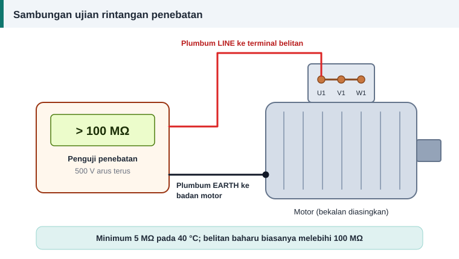

Ujian dan diagnosis
Ujian Megger: Cara Mengukur Rintangan Penebatan Motor
Ujian rintangan penebatan, yang di bengkel dipanggil ujian megger, mengukur sejauh mana penebat menghalang arus bocor daripada belitan ke badan motor. Ia dijalankan sebelum motor lama dihidupkan semula, selepas lilitan semula dan sebagai penyelenggaraan berkala.


Peralatan
Penguji rintangan penebatan membekalkan voltan arus terus yang tinggi dan mengukur arus bocor yang sangat kecil. Bacaannya dalam megaohm (MΩ). Multimeter biasa tidak sesuai kerana voltan ujiannya terlalu rendah.
Voltan ujian
| Voltan kadaran belitan | Voltan ujian arus terus |
|---|---|
| Di bawah 1000 V | 500 V |
| 1000 hingga 2500 V | 500 hingga 1000 V |
| 2501 hingga 5000 V | 1000 hingga 2500 V |
| 5001 hingga 12 000 V | 2500 hingga 5000 V |
| Melebihi 12 000 V | 5000 hingga 10 000 V |
Bagi motor voltan rendah 230 V dan 400 V, gunakan 500 V.
Prosedur
- Asingkan bekalan, kunci suis dan sahkan tiada voltan pada terminal.
- Tanggalkan kabel bekalan, kapasitor, pemacu elektronik dan penangkap pusuan daripada terminal motor.
- Nyahcas belitan ke bumi.
- Sambung plumbum bumi penguji ke badan motor pada logam yang bersih, dan plumbum talian ke terminal belitan. Untuk menguji keseluruhan belitan, pintas ketiga-tiga terminal bersama.
- Kenakan voltan ujian selama 60 saat dan catat bacaan pada saat ke-60.
- Catat suhu belitan.
- Nyahcas belitan ke bumi selama sekurang-kurangnya empat kali tempoh ujian sebelum menyentuh terminal.
- Jika enam hujung belitan boleh diasingkan, ulang bagi setiap fasa dengan dua fasa lain dibumikan. Ini menguji penebatan antara fasa.
Nilai minimum yang disyorkan
| Jenis belitan | Rintangan minimum pada 40 °C |
|---|---|
| Belitan dawai bulat (rawak), dan gegelung terbentuk di bawah 1 kV | 5 MΩ |
| Kebanyakan belitan gegelung terbentuk arus ulang-alik yang dibina selepas kira-kira 1970 | 100 MΩ |
| Belitan yang dibina sebelum kira-kira 1970 | (kV + 1) MΩ |
Di sini kV ialah voltan kadaran dalam kilovolt. Belitan baharu yang kering biasanya memberi bacaan ratusan megaohm atau lebih, jadi 5 MΩ ialah had paling bawah, bukan sasaran.
Pembetulan suhu
Rintangan penebatan menurun dengan cepat apabila suhu naik. Petua kasar ialah separuh bagi setiap kenaikan 10 °C. Bandingkan bacaan hanya pada suhu yang sama, atau betulkan kepada 40 °C sebelum membandingkannya dengan jadual.
Indeks polarisasi
Indeks polarisasi = bacaan pada 10 minit ÷ bacaan pada 1 minit
Nilai minimum yang disyorkan ialah 2.0 bagi kelas penebat B, F dan H, dan 1.5 bagi kelas A. Ujian ini lebih bermakna untuk belitan gegelung terbentuk pada mesin besar. Bagi belitan dawai bulat motor kecil, arus serapan mereput dalam beberapa saat, jadi indeks ini jarang memberi maklumat tambahan. Jika bacaan satu minit sudah melebihi 5000 MΩ, indeks polarisasi tidak lagi bermakna.
Mentafsir bacaan
- Rendah pada semua fasa: lembapan atau kotoran. Bersihkan, keringkan dan uji semula.
- Satu fasa sahaja rendah: kerosakan setempat pada fasa itu.
- Sifar: belitan menyentuh teras.
- Tinggi dan stabil: penebat ke bumi sihat.
Ujian ini mempunyai had. Ia tidak mengesan litar pintas antara lilitan dalam fasa yang sama. Untuk itu, ukur keseimbangan rintangan fasa atau gunakan penguji pusuan, seperti dalam ujian selepas lilit semula.
Rujukan dan bacaan lanjut
Artikel berkaitan
Ujian Selepas Lilit Semula: Rintangan, Keseimbangan dan Arus Tanpa Beban
Motor yang baru dililit semula mesti lulus beberapa ujian sebelum diserahkan. Ikuti urutan daripada pemeriksaan visual hingga arus tanpa beban dan ketahui maksud setiap bacaan.
Kelas Penebat Motor A, E, B, F dan H Dijelaskan
Kelas penebat pada plat nama menetapkan suhu tertinggi yang boleh ditanggung belitan. Fahami had setiap kelas, kenaikan suhu dibenarkan dan pilihan bahan semasa lilitan semula.
Keselamatan Semasa Membaiki dan Menguji Motor Elektrik
Elektrik, bahagian berpusing, haba dan bahan kimia semuanya hadir di bengkel motor. Ikuti lima langkah pengasingan bekalan dan amalan selamat ini sebelum memulakan sebarang kerja.